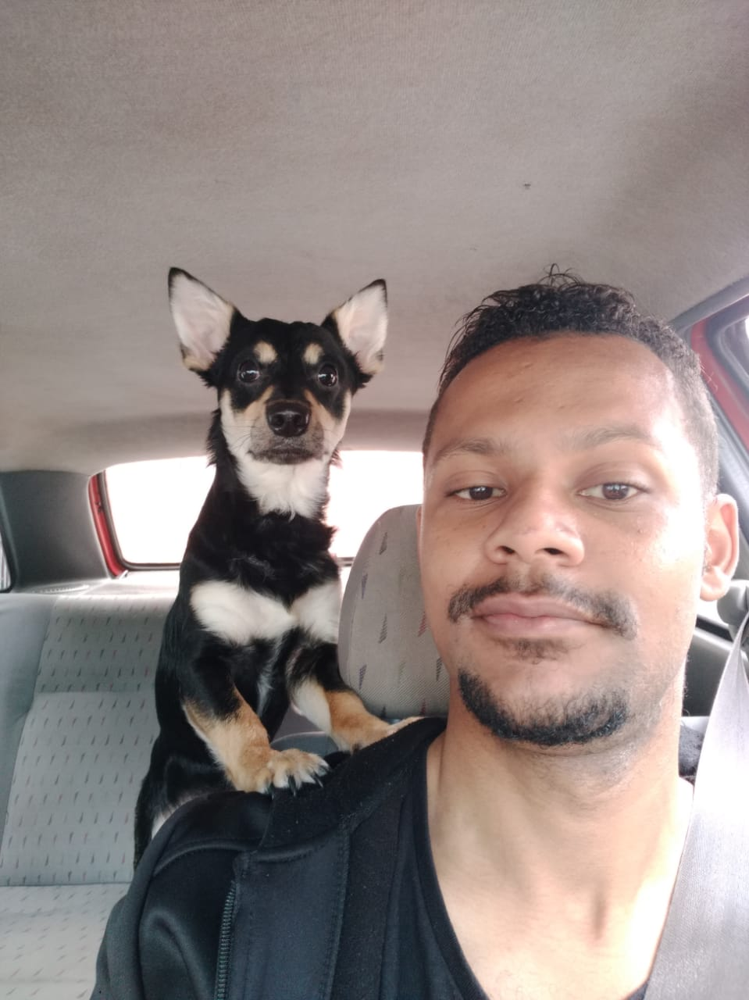

Olá,
Meu nome é Fabrício Cardoso, tenho 25 anos e moro atualmente na capital São
Paulo.
Sou formado em Análise e Desenvolvimento de Sistemas, porém resolvi me especializar
como front end. Amo programar e tocar em tempo livre!
- -Html5
- -Css3
- -Bootstrap
- -Javascript
- -Jquery
- -React
- -Angular
- -Na Brasa - Churrascaria
- -Cantinho do Céu
- -Banda Os Defensores da Fé
- -Cantinho das Delicias